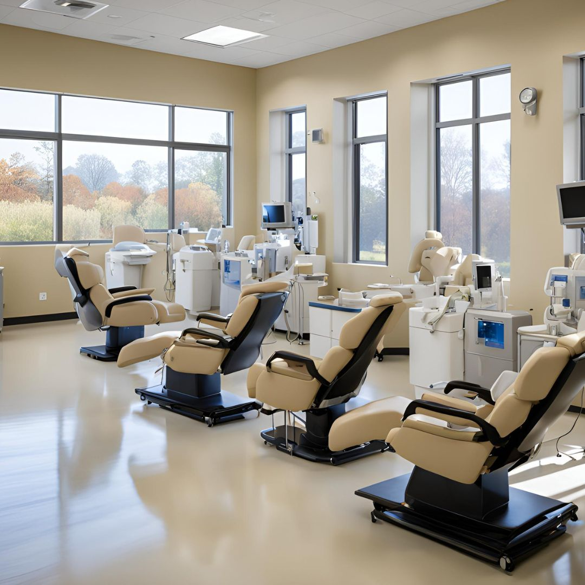
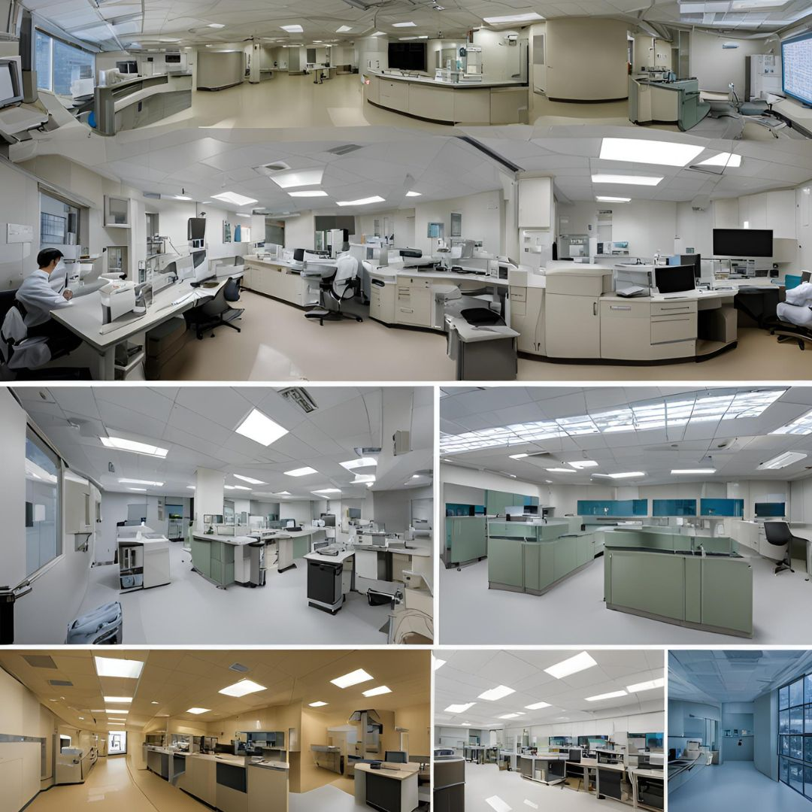

Expert care for kidney health
Our Department of Nephrology provides comprehensive care for kidney diseases and disorders. Our expert team offers advanced treatments, including dialysis services and transplant care, to improve patients' quality of life.

State-of-the-art dialysis facilities
Comprehensive transplant services

Cutting-edge kidney research
Head of Nephrology
Dialysis Specialist
Transplant Specialist
Connect with others on similar journeys
Specialized dietary guidance
Help with care management
Educational materials about kidney health
Learning sessions for patients and families
Digital education and support tools
Ongoing clinical trials and research
Join our research initiatives
Latest discoveries and publications